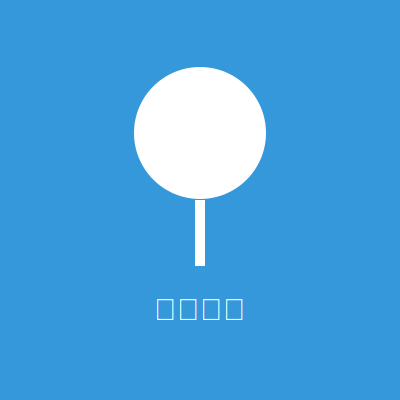

你好，我是小明
我是一名全栈开发工程师，拥有超过5年的Web开发经验。我热爱编程，喜欢探索新技术，并通过这个博客分享我的学习心得和技术见解。
在我的职业生涯中，我参与过多个大型项目的开发，包括电子商务平台、企业管理系统和社交媒体应用。我擅长前端和后端开发，并且对性能优化和用户体验设计有着浓厚的兴趣。
我的技能
JavaScript
React
Vue.js
Node.js
HTML5
CSS3
MongoDB
Express
Git
Docker
我的经历
我毕业于某知名大学计算机科学专业，毕业后加入了一家互联网创业公司，担任前端开发工程师。在那里，我学习了如何在快节奏的环境中工作，以及如何将设计转化为高质量的代码。
两年后，我加入了一家大型科技公司，开始接触全栈开发。在那里，我参与了多个跨国项目，学习了如何与不同文化背景的团队成员协作，以及如何构建可扩展的应用程序架构。
现在，我在一家专注于人工智能应用的公司工作，负责开发智能Web应用，将AI技术与传统Web开发相结合，创造更智能、更个性化的用户体验。
为什么写博客？
我创建这个博客的目的是分享我在技术领域的所学所思，帮助其他开发者解决问题，同时也是对自己知识的一种整理和巩固。我相信，教是最好的学，通过写作和分享，我也能不断提升自己。
在这个博客中，我会分享：
- 前端和后端开发技巧
- 新技术的学习心得
- 项目开发中的经验教训
- 编程思想和最佳实践
- 职业发展和自我提升的建议
联系我
如果你有任何问题、建议或合作意向，欢迎通过以下方式联系我：